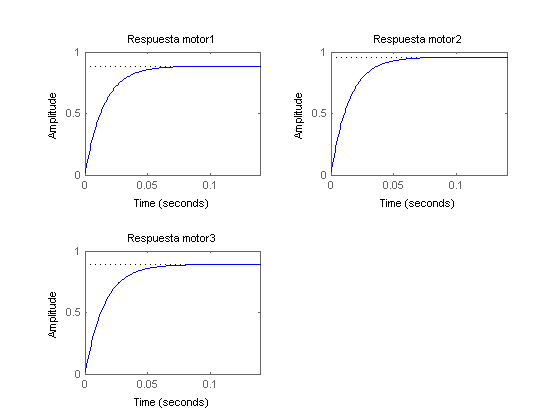
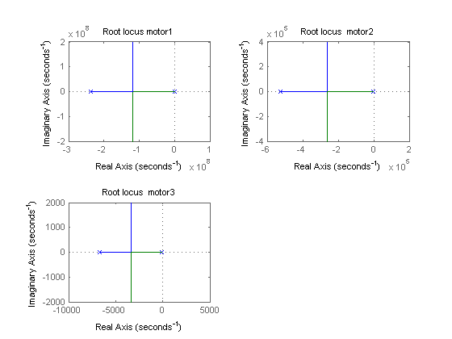
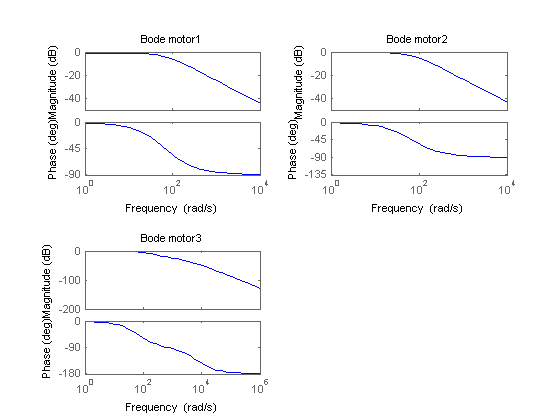
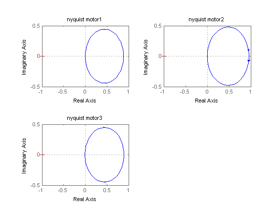

Contents
clear all;close all;clc
Modelos de los motores
num1 = [0.88548];
den1 = [0.014752*4.2122e-09 (0.014752+4.2122e-09) 1];
num2 = [0.95786];
den2 = [0.014366*1.905e-06 (0.014366+1.905e-06) 1];
num3 = [0.89041];
den3 = [0.015126*1.49e-04 (0.015126+1.49e-04) 1];
motor1 = tf(num1,den1);
motor2 = tf(num2,den2);
motor3 = tf(num3,den3);
Diagramas de respuesta al escalon
figure(1)
subplot(221)
step(motor1)
title('Respuesta motor1')
subplot(222)
step(motor2)
title('Respuesta motor2')
subplot(223)
step(motor3)
title('Respuesta motor3')

Diagramas de lugar de las raices
figure(2)
subplot(221)
rlocus(motor1)
title('Root locus motor1')
subplot(222)
rlocus(motor2)
title('Root locus motor2')
subplot(223)
rlocus(motor3)
title('Root locus motor3')

Diagramas de bode
figure(3)
subplot(221)
bode(motor1)
title('Bode motor1')
subplot(222)
bode(motor2)
title('Bode motor2')
subplot(223)
bode(motor3)
title('Bode motor3')

Diagramas de Nyquist
figure(4)
subplot(221)
nyquist(motor1)
title('nyquist motor1')
subplot(222)
nyquist(motor2)
title('nyquist motor2')
subplot(223)
nyquist(motor3)
title('nyquist motor3')
